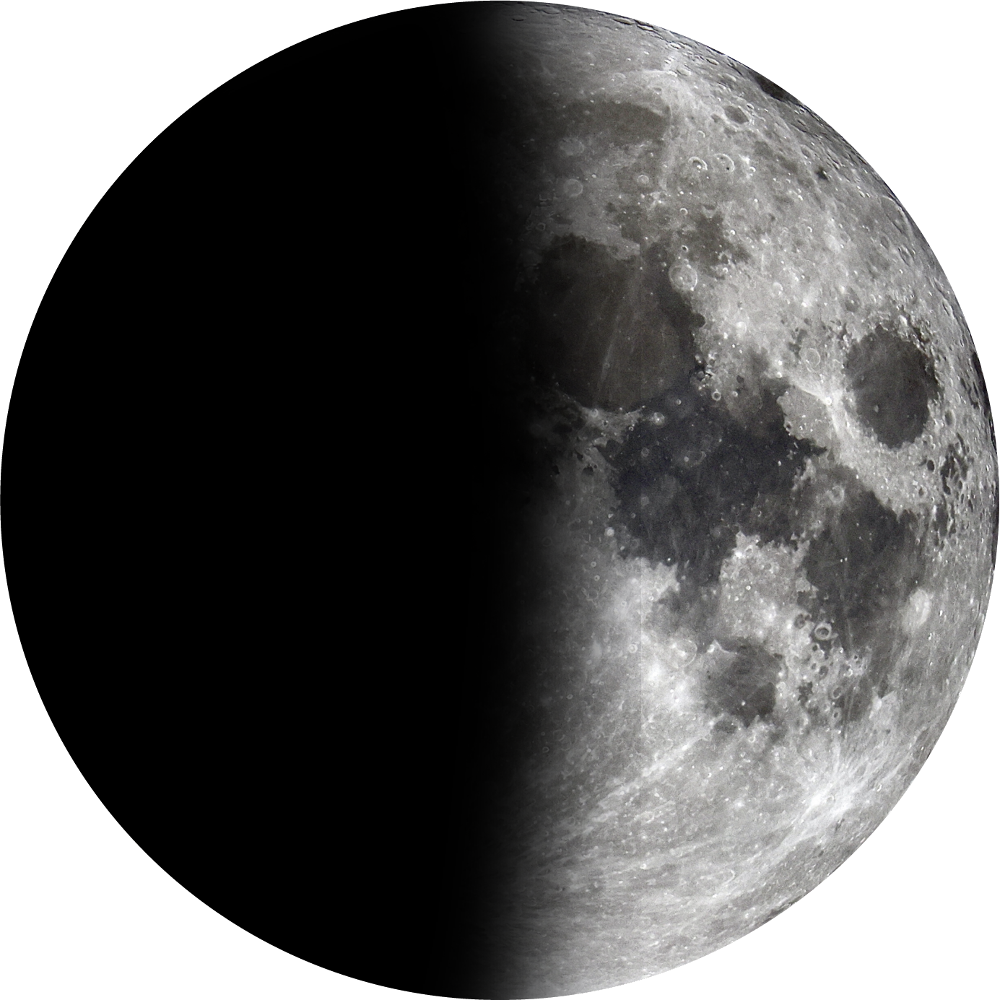
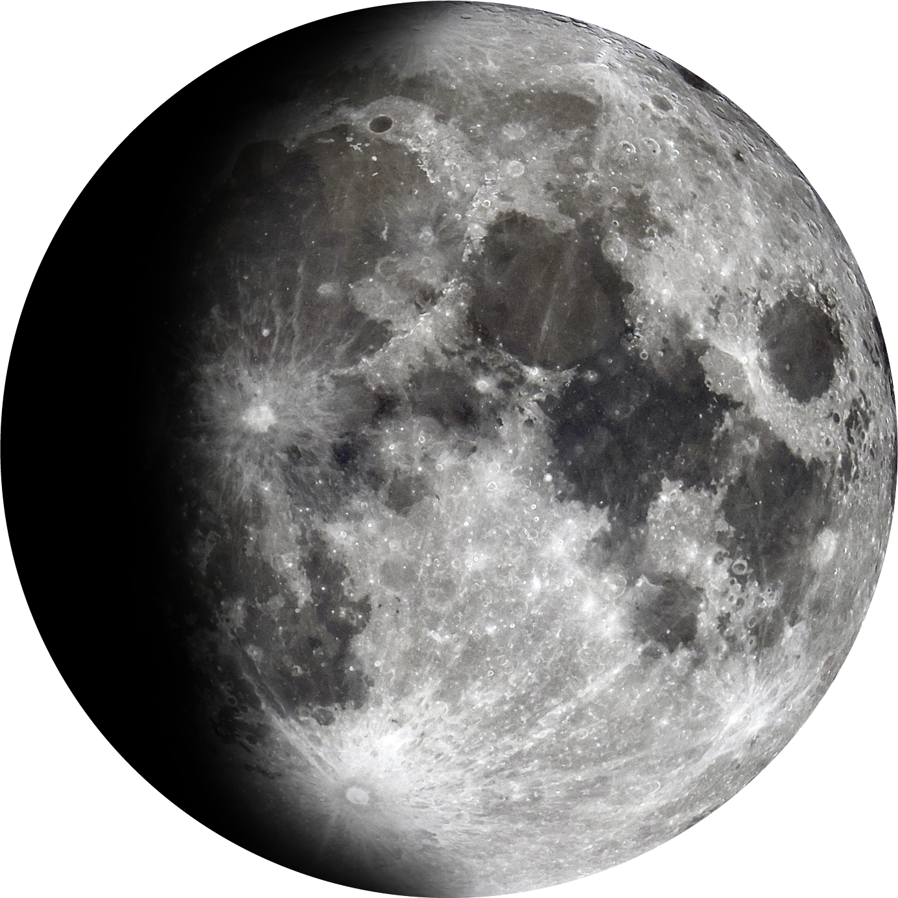
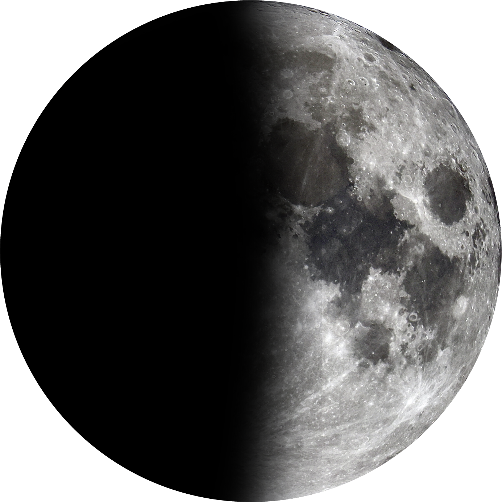
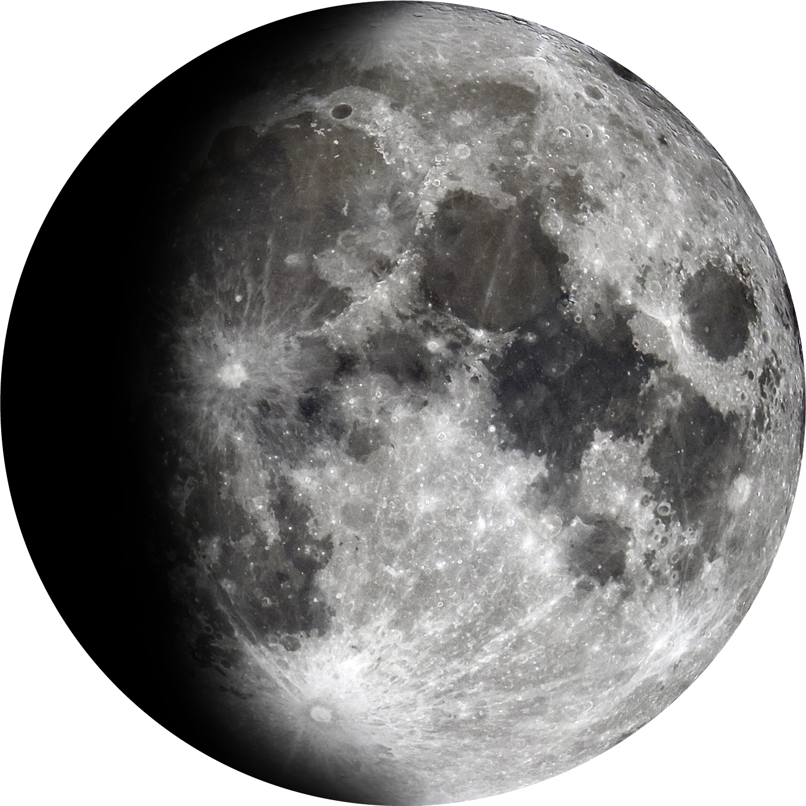
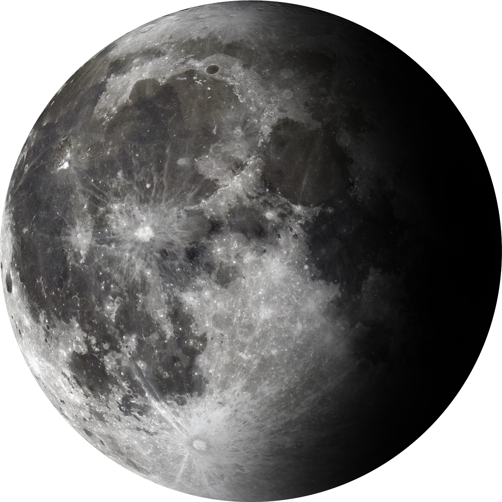
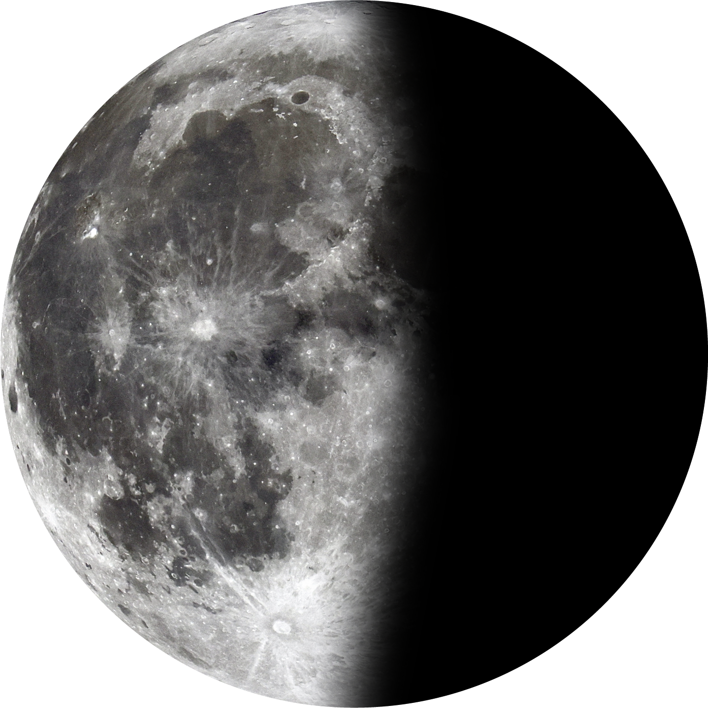
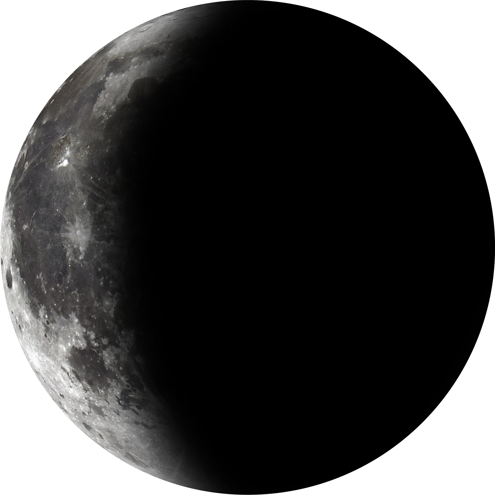
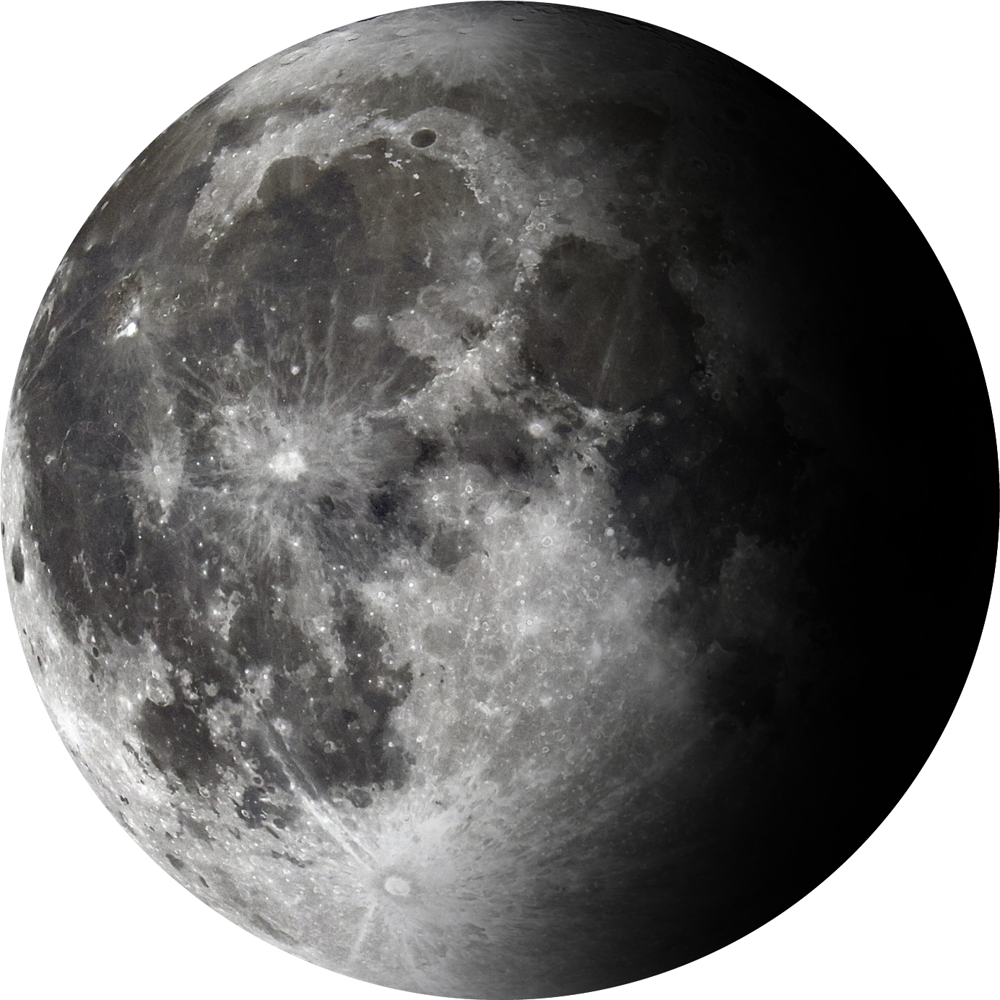
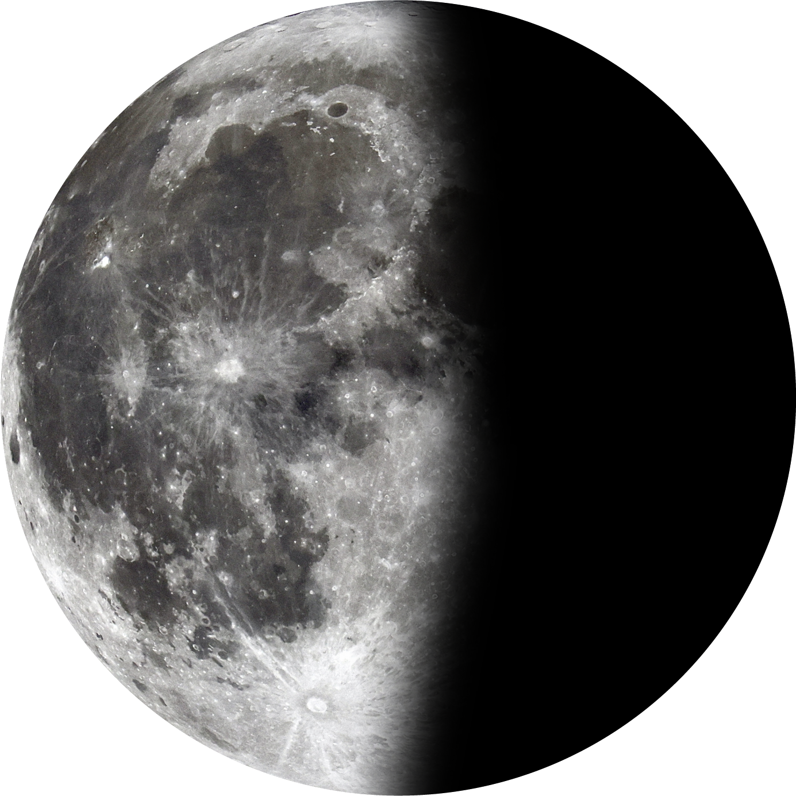
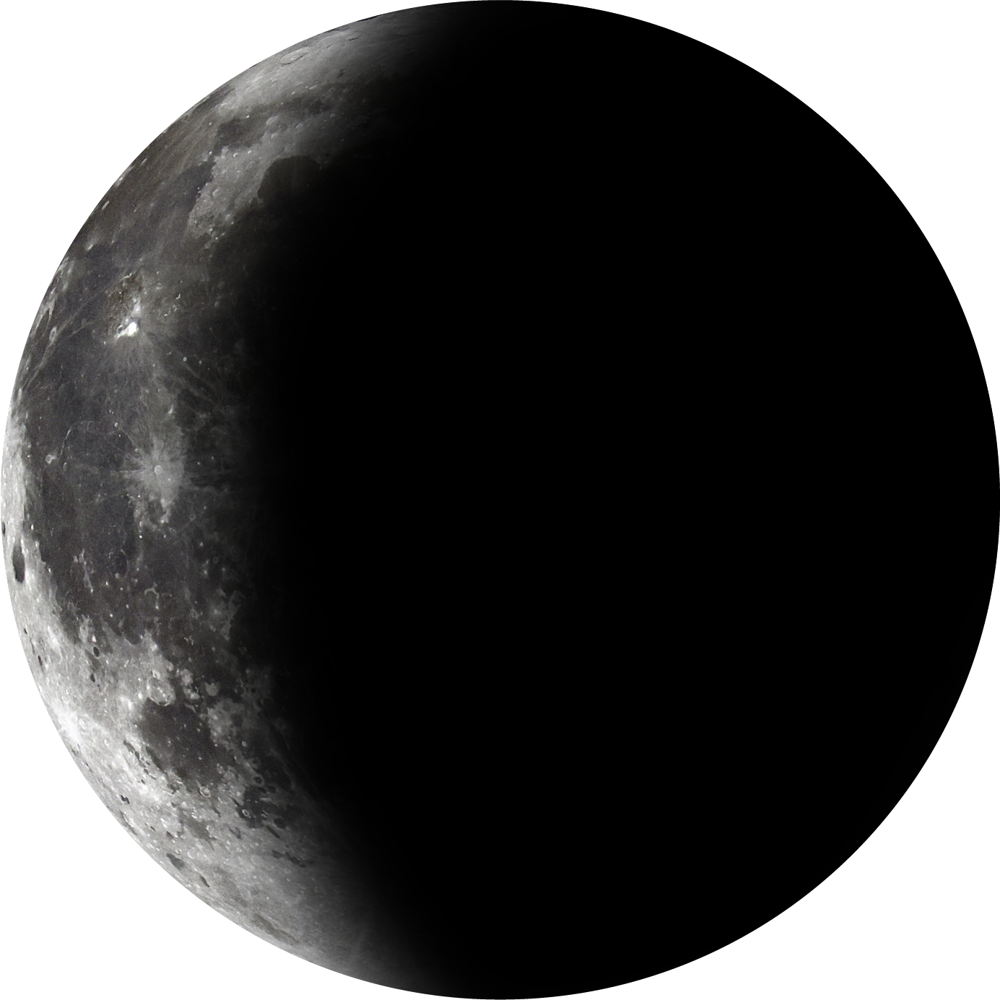

달이 해와 같은 방향에 있어서 햇빛이 닿지 않아요.그래서 달이 보이지 않고, 해와 함께 달이 떠올랐다가 함께 져요.
해가 진 직후 서쪽 하늘에 얇은 초승달이 살짝 보여요.달의 오른쪽이 조금 밝게 빛나기 시작해요!
달의 오른쪽 반이 환하게 빛나요!해가 진 뒤부터 자정 전가지 볼 수 있어요.
상현과 보름달 사이에요, 달의 오른쪽이 대부분 밝게 보이나완전히 둥글지는 않아요. 해가 진 뒤부터 밤늦게까지 볼 수 있어요.
햇빛이 달의 앞면 전체에 비쳐서 둥근 달이 환하게 빛나요!해가 질 때 뜨고, 밤새 볼 수 있어요.
보름달과 하현달 사이, 달의 왼쪽이 대부분 밝게 남아 있어요.한밤중부터 새벽까지 볼 수 있어요.
달의 왼쪽 반쪽만 하얗게 보여요.밤 늦게 뜨고, 새벽과 아침에 잘 볼 수 있어요.
해가 뜨기 전에 동쪽 하늘에 아주 얇은 달이 보여요.달의 왼쪽만 조금 보여요.

 



 




